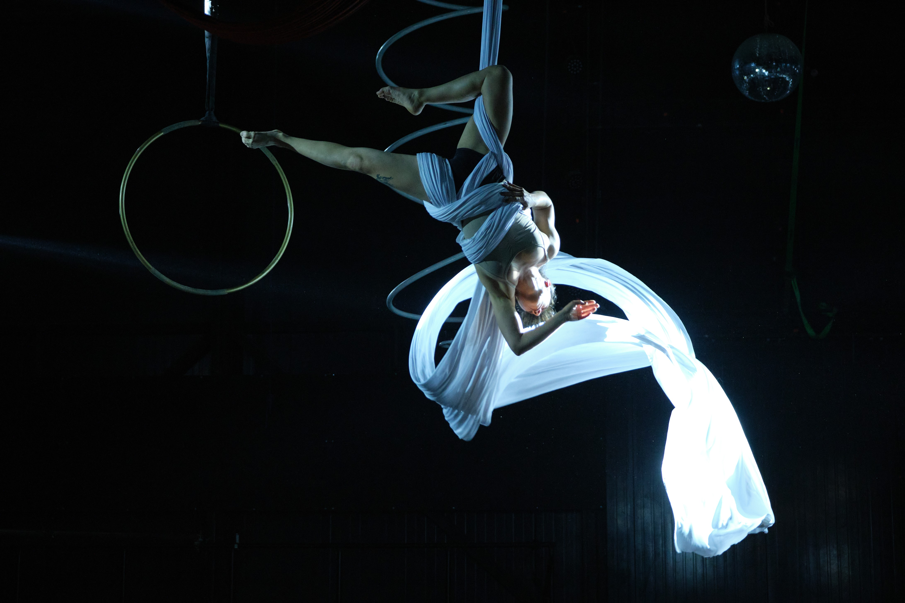
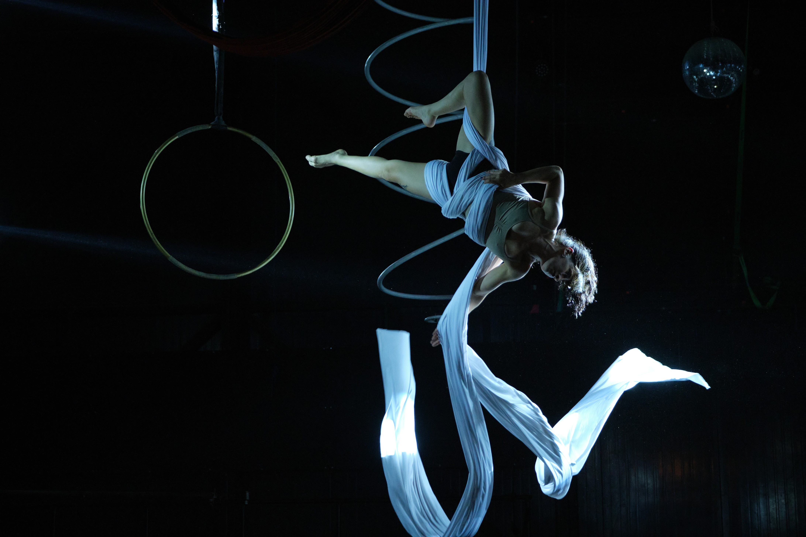

Galería




Artista escénica enfocada en el trabajo corporal, la presencia y la exploración de los límites.
Dedicada a la interpretación y la creación.
Nací en 1997 en el sur de Chile, aunque siempre he habitado Santiago.
A los 20 años conocí el lenguaje corporal del circo, y desde entonces he desarrollado un camino independiente de formación en la disciplina.
Mis raíces las honro, mientras me abro a la posibilidad de una vida cambiante.
En 2021 me inicié en la danza contemporánea, donde entré en contacto con la improvisación y el trabajo de piso.
En 2023 profundicé mi formación en el Centro de Danza Espiral,en el Programa de Introducción a la Danza,
donde estudié durante dos años en jornada vespertina.
En 2025 me dediqué completamente a mi formación en circo, cursando la Escuela Preparatoria de las Artes Circenses
con más de 900 horas de estudio.
Realicé una residencia en Circo Los Nadie,donde desarrollamos un proceso que culminó en una presentación
en el Centro de las Artes Aéreas, en Circo Balance.
Actualmente continúo trabajando de manera solista y en colaboración con la Cía. Punto Muerto.
Investigación escénica en torno al tiempo, la repetición y el desgaste del cuerpo con el paso del tiempo


Instagram: @pau.mp4_
Mail: paulazuniga.irigoin@gmail.com